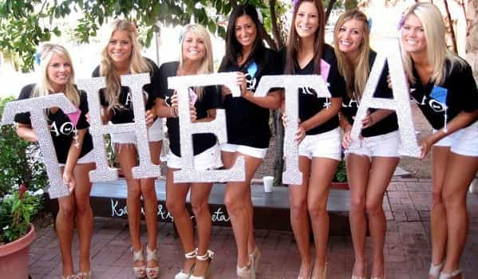

Daryush "Roosh" Valizadeh created ROK in October 2012. You can visit his blog at RooshV.com or follow him on Twitter and Facebook.


I noticed that the more I’m myself in a relationship with a woman (as I see myself), the happier I am with her. On the other hand, the more I have to change my behavior in line to what I think she would find attractive, the less satisfaction I get from that relationship. While “being yourself” is not the key to getting laid, it may be the key to being satisfied in relationships, but now that times have changed, this may be an impossible feat.
In more ancient times, relationships were much different than what we experience now. Back then, when a woman valued a man’s resources for her very own survival, the man could more or less be himself since there were less options for her to walk away YOLO-style and immediately find another man. He acted the opposite of what we have today, where most men apply a filter to their natural impulses in order to keep their women in a permanent state of being attracted. Today we do what we believe or know that women will like in a way to minimize our rejection rate and maximize the quantity or quality of sex or love that we receive. We apply rules, techniques, and strategies to meet women, because without them it would not be possible to achieve intimacy.

Even beta orbiters do this when they volunteer to be in the friendzone—they are applying a strategy that they truly believe will be the most effective means of starting a sexual relationship, however foolhardy that may be. Whatever strategy is used, whether beta or alpha, men must act inauthentic in order to gain intimacy that feels authentic. The beta must pretend to be a friend when he is interested in the girl and wants sex. The alpha must pretend to be aloof when he is interested in the girl and wants sex. They are both putting on a performance for the same goal. One performance gets the girl in her prime while the other gets her afterwards, when she has gained 20 pounds and becomes host to three different HPV strains.
The extreme of this inauthenticity is the married man who must apply “game” on his wife, even though she pledged to dedicate her life to him unto death, just so that she doesn’t get bored with him and cheat before draining his blood in a divorce. While the player has to put on a clown suit when he goes to the club to pick up women, the married man has to permanently wear the clown suit and hope she never strays, especially if he married an attractive Western woman.
Today, no man can be authentic in front of a woman. We can only behave and act through techniques and behaviors which have been documented to work. We have to learn an assortment of alpha traits and become more psychologically aware than BF Skinner just to get laid. We have to rip out our beta male souls, or just a natural impulse to be a good person, and morph it into something that a modern woman appreciates enough to spread her legs for the moment of sex, which ironically is becoming less authentic with each passing year as girls poorly mimic what they see in porn or read in stupid books, making loud noises of simulated pleasure while demanding to be strangled like a rag doll.
For men, acting must occur in the most mundane of situations:
One reason the game is not worth it for some men is because we are forced to be actors and clowns in the presence of women for transient sexual gain. I would do 1,000 approaches if it meant I met a girl who would unconditionally love me for who I am and will become for all eternity, but this is an absolute impossibility where girls can survive without men. Instead I will have to dance and juggle for her, sleep with her maybe 10 times, but more like 4 or 5, and then the relationship will get stale, neither of us able to find the will or motivation to continue because of the type of 20th century environment we were born into by no choice of our own.

Relationship that is not successful
Relationships that have lifelong worth, where you gain as much value as you put in, can only come when you’re the most authentic (it’s impossible to be 100% authentic, but 80% or above is a good goal). This is the point where it doesn’t feel like you’re expending labor every day just to keep her. Unfortunately, it’s becoming impossible to achieve high authenticity outside the realm of familial and friendly relations where you can be more direct with your beliefs, desires, dreams, and hopes. With women you’re sexual with, being open and honest is dangerous. Tell her what you think or feel and she’s out the door.
The problem is that if you can’t be honest with someone and express your true thoughts, you’re in a relationship that can’t possibly last. If you’re applying game to your wife, and that game is not congruent with your beliefs, the marriage will end. If you’re authentic to a person who is inauthentic, that relationship will fail. Becoming authentic—of knowing not only the red pill truths of the world but the truths of your self—may be a losing proposition in a world that is becoming grotesquely inauthentic, even denying basic truths of human nature and gender like we see with progressivism in America. Knowing the truth may be the fastest path to isolation and loneliness because sooner than later you’ll tired of putting on your actor’s mask.

While it’s easy to be inauthentic for the short time it takes to get many girls into bed, this isn’t a sustainable solution if you ever want to take off the mask. That leaves us with two options. The first is to become the alpha male that most women want, where your impulse changes from unconsciously doing naturally beta acts to alpha acts. This can only come when you internalize game (at least 5 years of practice) like how a professional basketball player can shoot with his eyes closed, but how alpha you can become from full-blown beta is up for debate.
The second option is to have fun being the clown to get a variety of sex, but only plan for long-term relationships with women who appreciate your true—albeit constantly changing—self. It’s clear to me that for men to be happy with women in today’s environment, a combination of both will have to take place.
Men will have to uproot their nice guy instincts and put on a mask to have sex with pretty girls who demand a clown while considering something long term with the occasional girl who loves us even more when we temporarily take off that mask. Yet in terms of being ourselves at all times with women and being everlastingly happy with them—I’m sad to announce that we live in an age where that is not possible. And there’s nothing we can do about it.
This article was originally published on Roosh V.
Read Next: Men Are Nothing More Than Clowns To The Modern Woman